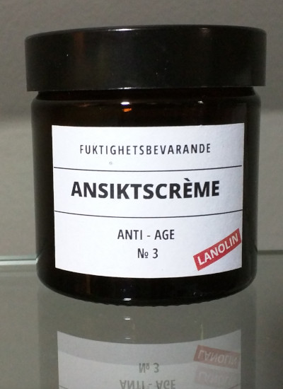
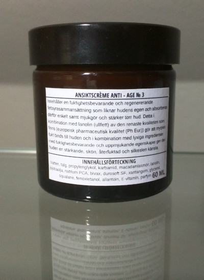

Ansiktcrème Anti - Age № 3



Innehåller en fuktighetsbevarande och regenererande fettsyrasammansättning som liknar hudens egen och absorberas därför enkelt samt mjukgör och stärker torr hud.
Kombinationen med lanolin (ullfett) av den renaste kvaliteten som finns gör att mycket fukt binds till huden.
Lyxiga ingredienser med fuktighetsbevarande och uppmjukande egenskaper ger det huden en stärkande, skön, återfuktad och silkeslen känsla.